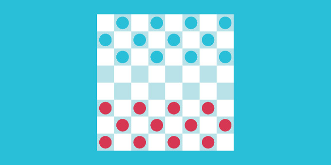

Setting up a Grid and Board

To learn more about Grids, see the documentation page for Grids.
In this example, we will use sprites, although meshes can also be used.
1. Configure the Camera
Set the main camera to orthographic, set its size, and choose a background color.
2. Make cell and piece prefabs
Make the cell prefab:
- Create a square sprite (10x10), and make a prefab from it.
- Call it Cell.
- Add a
Sprite Cellcomponent to it.
Our game will feature only one type of piece, which will be differentiated by color for each player.
Make the visual piece prefabs:
- Create a circle sprite (10x10), and make a prefab from it.
- Set the Order in layer to 1.
- Call it Red Visual. Make it red.
- Add a
Grid Game Piececomponent to it. - Duplicate the prefab, and call it Blue Visual. Make it blue. [Should we make two pieces?]
Make the logical piece prefabs:
- Create an empty game object, and make a prefab from it.
- Call it Red Logical.
- Add a
Grid Game Piece Settingscomponent to it:- Set the Owner Player ID to
blue. - Set the Piece ID to
piece. If this was chess, the IDs would be "rook", "knight", etc. - Link in the Blue Visual prefab.
- Set the Owner Player ID to
- Add a
Any Open Space Rulecomponent to it. Verify it is theOpenSpaceMoveRule.csscript and not theOpenSpaceAddRule.csscript. (A different tutorial covers piece rules. This rule allows pieces to be moved to any open square without any additional configuration.) - Duplicate the prefab, and call it Blue Logical.
- Change the Owner Player ID to
red, and link in the Red Visual prefab.
3. Create the grid
Grids is a powerful system that allows for a significant amount of customization. In this instance, we will use the simplest setup, which is a 10x10 grid of cells arranged in a rectangle.
- Right-click on your project and select Create | Grids | Presets | Rect Grid. This will create two objects, the shape graph (this determines the cells and logical layout) and the space map graph (that determines how the cells are positioned in space). For the purposes of this tutorial the defaults are good: the shape is a 10x10 Parallelogram and the space map is a simple Rect grid (which means the logical parallelogram will be positioned to form a rectangle).
- Create an empty game object and add a
Sprite Cell Grid Builderto it. - Link in the shape graph, space map graph, and the cell prefab on the
Sprite Cell Grid Buildercomponent. - Hit the Build Grid button on the
Sprite Cell Grid Buildercomponent. You should see a grid of cells in the scene view, which will appear as a single large square due to their uniform color.
4. Set up a checkerboard coloring
- To the grid, add a
Sprite Grid Colorscomponent. - Delete all colors, except for two.
- Set the color function: x0 to
2, x1 to1, and y1 to1for a checkerboard pattern. For other patterns, see What are Grid Colorings.
5. Add pieces to the board
- Add a
Grid Game Managercomponent (Grid Game Ruleswill automatically be added). - Add the logical piece prefabs to the Pieces field in
Grid Game Rules. - Setup the Initial Pieces in
Grid Game Manager, using the player IDsredandblue, and piece IDpiecethat you used before. Since this is a simple rect grid, you can use coordinates(0, 0)to(9, 9)to place the pieces. - Click Build Grid to have the pieces added.
Note that the pieces will disappear when you run the game, which is the intended behavior. The pieces are added at runtime during a step not covered in this exampl.